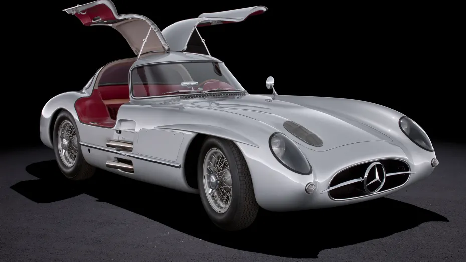
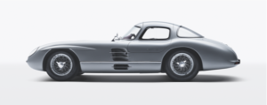

1955 Mercedes-Benz 300 SLR Uhlenhaut Coupé Becomes Most Valuable Car in the World After €135,000,000 Auction Sale

1955 Mercedes-Benz 300 SLR Uhlenhaut Coupé Becomes Most Valuable Car in the World
After €135,000,000 Auction Sale

A 1955 Mercedes-Benz 300 SLR Uhlenhaut Coupé from 1955 has been sold at auction for a record price of €135,000,000 to a private collector. The car, which is one of two created in 1955, has always been regarded as one of the great jewels of motoring history, but few ever imagined that it would be offered for sale. One of just two prototypes built by the Mercedes-Benz racing department, the car is named after its creator and chief engineer, Rudolf Uhlenhaut, and is considered to be one of the finest examples of automotive engineering and design, often cited as being ‘the most beautiful car in the world’ by automotive experts and enthusiasts worldwide.
“We are proud that we can contribute with our historical collection to this initiative connecting the past with the future of engineering and decarbonisation technology”, says Marcus Breitschwerdt, Head of Mercedes-Benz Heritage. “The private buyer has agreed that the 300 SLR Uhlenhaut Coupé will remain accessible for public display on special occasions, while the second original 300 SLR Coupé remains in company ownership and will continue to be displayed at the Mercedes-Benz Museum in Stuttgart.”
The remarkable 300 SLR was based on the hugely successful W 196 R Grand Prix car which won two World Championships in the hands of Juan Manuel Fangio, but with its engine enlarged to 3.0 litres for sports car racing. The car was capable of 180 mph, making it one of the fastest road legal cars to have ever been created at the time.
The sale of the 300 SLR Uhlenhaut Coupé took place on May 5th at an auction held at the MercedesBenz Museum in Stuttgart, with RM Sotheby’s working in close cooperation with Mercedes-Benz throughout the entire process to ensure the sale was concluded to the highest possible standard. Among the invitees were selected Mercedes customers and international collectors of cars and art who share the corporate values of Mercedes-Benz.
Speaking on behalf of RM Sotheby’s, Peter Wallman, Chairman, UK & EMEA, said: “Words can’t really do justice to the importance and significance of this sale. It’s reasonable to say that nobody ever imagined that this car would ever be offered for sale, so for Mercedes-Benz to ask RM Sotheby’s to conduct the auction was an absolute honour.”
The winning bid on the car was an incredible €135,000,000, making it the most valuable car ever sold and a price which exceeds the existing record by more the €90,000,000. In what felt like a surreal experience, the bidding opened at a price higher than the selling price of the 1962 Ferrari 250 GTO sold by RM Sotheby’s in 2018, the car which previously ranked as the most valuable ever sold at auction. The 300 SLR now sits in the top ten most valuable items ever sold at auction. The proceeds will be used to establish a worldwide “Mercedes-Benz Fund” that will provide educational and research scholarships in the areas of environmental science and decarbonisation for young people.
“What an absolute thrill to bring the hammer down on this masterpiece of design and engineering, which now stands shoulder to shoulder with the greatest works of art ever sold. Few ever dreamt that this great jewel of motoring history would ever come for sale, and how fitting that it should happen now, just as we embark on a new and exciting chapter with our partners at RM Sotheby’s,” said Oliver Barker, Chairman of Sotheby’s Europe